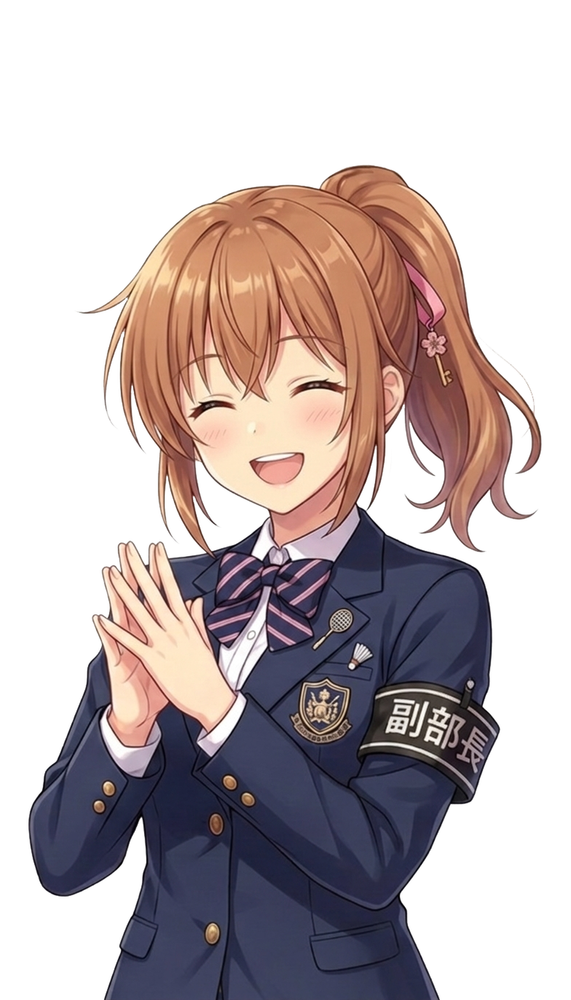

<!doctype html><html lang="ja"><meta charset="utf-8"><meta name="viewport" content="width=device-width,initial-scale=1"><title>放課後のステラ · 立ち絵エモート見本</title><link rel="stylesheet" href="character-emotes.css">
<style>
*{box-sizing:border-box}body{margin:0;background:#111325;color:#eef0ff;font:15px/1.65 system-ui,sans-serif}header,main{max-width:1200px;margin:auto;padding:26px}header{display:flex;align-items:center;justify-content:space-between;border-bottom:1px solid #ffffff18}.brand{font-size:13px;color:#c8bddf;letter-spacing:.15em}h1{font-size:25px;margin:4px 0}.tag{font-size:12px;border:1px solid #ffffff25;border-radius:30px;padding:6px 13px;color:#edd8a1}main{display:grid;grid-template-columns:minmax(0,1.35fr) minmax(340px,1fr);gap:24px}.stage{height:610px;position:relative;border-radius:22px;overflow:hidden;background:linear-gradient(#16182b33,#10112777),url('assets/images/bg/classroom.webp') center/cover;border:1px solid #ffffff22}.stage:before{content:'';position:absolute;inset:0;background:linear-gradient(transparent 65%,#171427)}.stage-note{position:absolute;top:16px;left:18px;font-size:12px;background:#171626bd;border-radius:20px;padding:5px 12px}.actor{position:absolute;width:280px;height:470px;bottom:105px;left:50%;transform:translateX(-50%)}.char-sprite{width:100%;height:100%;display:flex;justify-content:center;align-items:flex-end}.char-sprite img{max-height:100%;max-width:100%;object-fit:contain}.dialog{position:absolute;inset:auto 20px 18px;background:#19152be8;border:1px solid #d8cfa53d;border-radius:14px;padding:16px 20px;min-height:108px}.name{font-size:13px;color:#f4d596;margin-bottom:6px}.line{font-size:19px;font-family:serif}.panel{padding:23px;border:1px solid #ffffff19;border-radius:22px;background:#1b1e33}h2{font-size:18px;margin:0 0 6px}.muted{color:#a9aec6;font-size:13px}.presets{display:grid;grid-template-columns:repeat(3,1fr);gap:9px;margin:20px 0}button,select{color:inherit;background:#272b44;border:1px solid #ffffff20;border-radius:10px;padding:11px 12px;font:inherit}button{cursor:pointer;text-align:left}button:hover{border-color:#ddc8fc}button[aria-pressed=true]{background:#494063;border-color:#cfb4ec}.preset-name{font-size:14px;display:block}.preset-note{font-size:11px;color:#bdc0d6}.field{margin-top:16px;display:flex;justify-content:space-between;align-items:center;gap:12px}select{max-width:65%}input[type=range]{width:65%;accent-color:#d8bce8}.actions{display:flex;gap:9px;margin-top:22px}.primary{background:#cdb0df;color:#211b31;font-weight:600;text-align:center;flex:1}.detail{background:#15172a;border-radius:12px;padding:15px;margin-top:17px;min-height:93px}.pill{color:#eddbb1;font-size:12px}footer{grid-column:1/-1;color:#a9aec6;font-size:13px;padding:0 3px}code{color:#e5d4f6;word-break:break-all}button:focus-visible,select:focus-visible,input:focus-visible{outline:2px solid #eed7ff;outline-offset:3px}@media(max-width:800px){main{grid-template-columns:1fr;padding:15px}.stage{height:560px}header{padding:20px}.tag{display:none}.presets{grid-template-columns:1fr 1fr}.panel{padding:19px}}
</style>
<header><div><div class="brand">放課後のステラ / DIRECTION STUDY</div><h1>表情に、ひと呼吸の動きを。</h1><div class="muted">立ち絵エモートの実装プレビュー</div></div><span class="tag">既存の立ち絵で試せます</span></header>
<main><section class="stage" aria-label="エモートの表示見本"><span class="stage-note">本編と同じエフェクトを使用</span><div class="actor"><div class="char-sprite" id="actor"></div></div><div class="dialog"><div class="name" id="name">桜咲さくら</div><div class="line" id="line">やった！　もう一回言って。</div></div></section>
<section class="panel"><h2>感情の動きを選ぶ</h2><div class="muted">クリックすると一度再生。強さと人物も比較できます。</div><div class="presets" id="presets"></div><div class="field"><label for="character">人物</label><select id="character"><option value="sakura">さくら</option><option value="kotoha">ことは</option><option value="mahiru">まひる</option><option value="nobuhara">延原</option></select></div><div class="field"><label for="strength">動きの強さ <output id="value">0.8</output></label><input id="strength" type="range" min="0.35" max="1.5" step="0.05" value="0.8"></div><div class="actions"><button class="primary" id="play">もう一度再生</button><button id="clear">姿勢を戻す</button></div><div class="detail" aria-live="polite"><div class="pill" id="effect-title"></div><div id="description" class="muted"></div><code id="command"></code></div></section>
<footer>しゅんと沈む・倒れる動きは姿勢を保ちます。「姿勢を戻す」で解除できます。<br>動きは顔の表情と組み合わせる想定です。OSの「動きを減らす」が有効な場合、移動を抑え、装飾は静止表示にします。</footer></main>
<script src="character-emotes.js"></script><script>
const examples={bounce:['弾む','小さく二度、喜びが跳ねる','happy','やった！　もう一回言って。'],joy:['喜び＋きらめき','弾む動きに星の光を重ねる','happy','見てた？　あれ、うまくいった！'],sparkle:['きらめく','小さな光を3つ、淡く控えめに','happy','……嬉しいです。'],wobble:['よろける','重い荷物や疲れで足元がふらつく','normal','待って、ちょっと重い……。'],fall:['倒れかける','よろけて沈み、斜めの姿勢を保つ','normal','あ、だめ。ちょっと休ませて。'],slump:['しゅんと沈む','重心を低くして、落ち込みを残す','sad','そっか……。'],tremble:['かすかに震える','横にごくわずか。強さは最小値に固定','normal','……まだ、怖い。'],nod:['うなずく','小さな肯定。静かな会話に','normal','うん。わかった。'],startle:['びくっとする','瞬間だけ跳ねて、すぐ落ち着く','surprised','うわっ。いたの？'],shy:['照れる','少し身をよじる、短い間','shy','……変に意識しちゃったじゃん。'],anger:['むっとする・青筋','頭の近くで小さな青筋が拡大縮小する','angry','今、それ言わないで。'],irritated:['静かにむっとする','記号を出さず、ごく小さく力む','angry','……今、その話はやめて。'],sweat:['あせあせ','顔の横から3つのしずくが外へ散る','normal','ちょ、ちょっと待って！'],heart:['好意がふわり','小さなハートを2つ、淡く添える','shy','来てくれて、嬉しかった。'],sigh:['ため息','肩が落ちる感じに、ため息の印','sad','あー……今日は疲れた。']};
const names={sakura:'桜咲さくら',kotoha:'花園ことは',mahiru:'月夜野まひる',nobuhara:'延原晴人'};let selected='bounce',generation=0;
const actor=document.getElementById('actor');let img=document.getElementById('portrait');
async function play(){const ticket=++generation;VNCharacterEmote.clear(actor);
const control=document.getElementById('strength');
if(selected==='tremble'){if(!control.disabled)control.dataset.previous=control.value;control.value='0.35';control.disabled=true;}
else if(control.disabled){control.disabled=false;control.value=control.dataset.previous||'0.8';}
document.getElementById('value').textContent=Number(control.value).toFixed(2);
const char=document.getElementById('character').value,example=examples[selected],strength=control.value;
let expr=example[2];if(char==='nobuhara')expr=({sad:'tired',shy:'relieved',angry:'serious',surprised:'panic'})[expr]||expr;
const nextImage=new Image();nextImage.id='portrait';nextImage.alt=names[char];try{await new Promise((resolve,reject)=>{nextImage.onload=resolve;nextImage.onerror=reject;nextImage.src=`assets/images/chars/${char}/${expr}.png`;});if(nextImage.decode)await nextImage.decode().catch(()=>{});}catch(e){if(ticket!==generation)return;document.getElementById('description').textContent='画像を読み込めませんでした。ローカルサーバーから開いてください。';return;}if(ticket!==generation)return;img.replaceWith(nextImage);img=nextImage;
document.getElementById('name').textContent=names[char];document.getElementById('line').textContent=example[3];document.getElementById('effect-title').textContent=VNCharacterEmote.definitions[selected].label;document.getElementById('description').textContent=example[1]+(VNCharacterEmote.definitions[selected].hold?'。姿勢は解除まで保持。':'。一度で終わります。');document.getElementById('command').textContent=`@emote ${char} ${selected} ${strength}`;VNCharacterEmote.play(actor,selected,strength);}
for(const [key,value]of Object.entries(examples)){const button=document.createElement('button');button.type='button';button.dataset.effect=key;button.setAttribute('aria-pressed',key===selected);button.innerHTML=`<span class="preset-name">${value[0]}</span><span class="preset-note">${VNCharacterEmote.definitions[key].hold?'姿勢を保持':'一度再生'}</span>`;button.onclick=()=>{selected=key;document.querySelectorAll('[data-effect]').forEach(b=>b.setAttribute('aria-pressed',b.dataset.effect===key));play();};document.getElementById('presets').appendChild(button);}
document.getElementById('character').onchange=play;document.getElementById('play').onclick=play;document.getElementById('clear').onclick=()=>{++generation;VNCharacterEmote.clear(actor);};document.getElementById('strength').oninput=e=>document.getElementById('value').textContent=Number(e.target.value).toFixed(2);play();
</script></html>